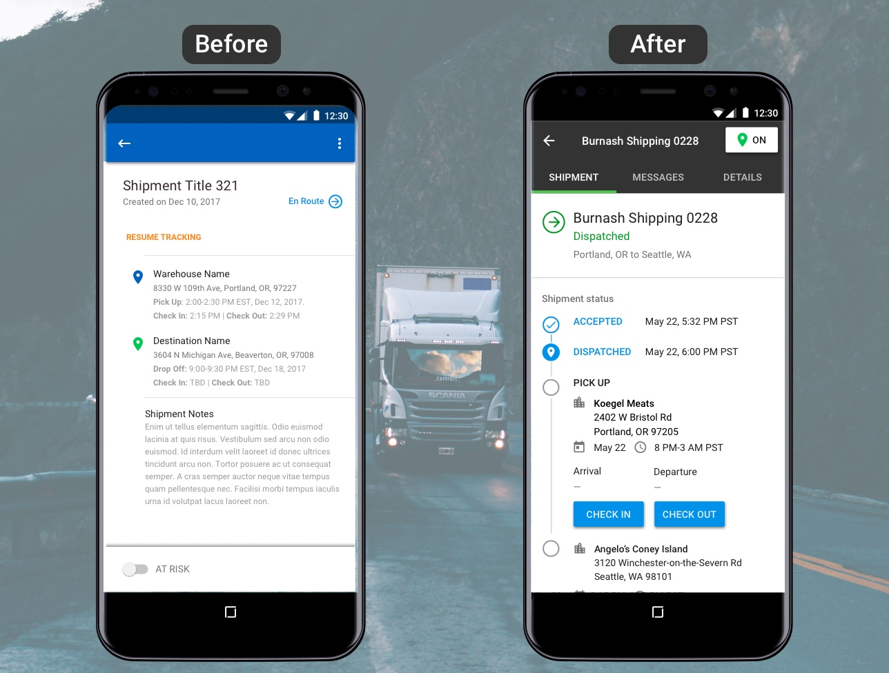
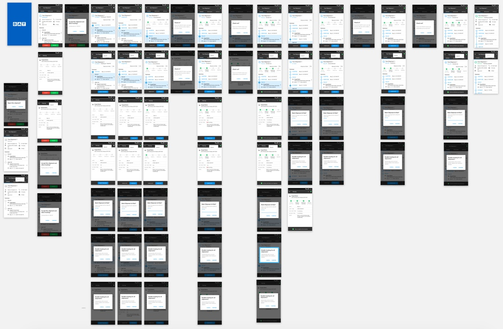
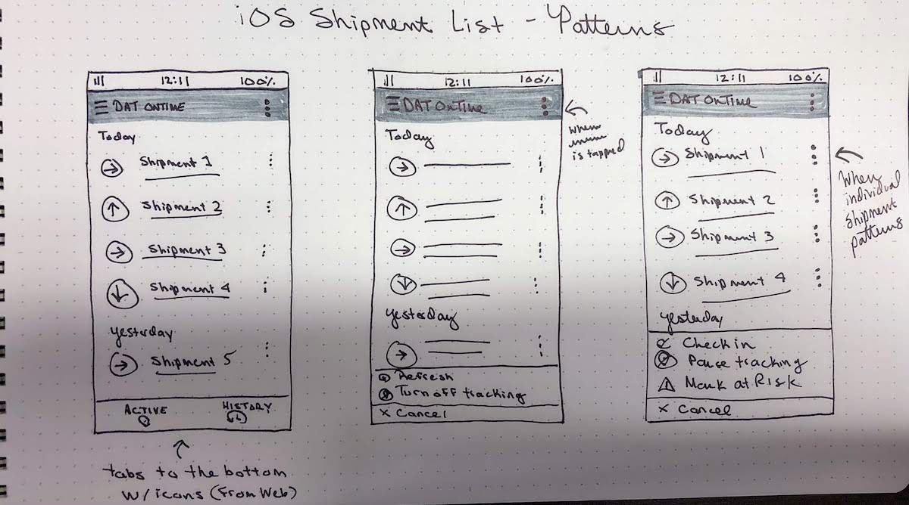
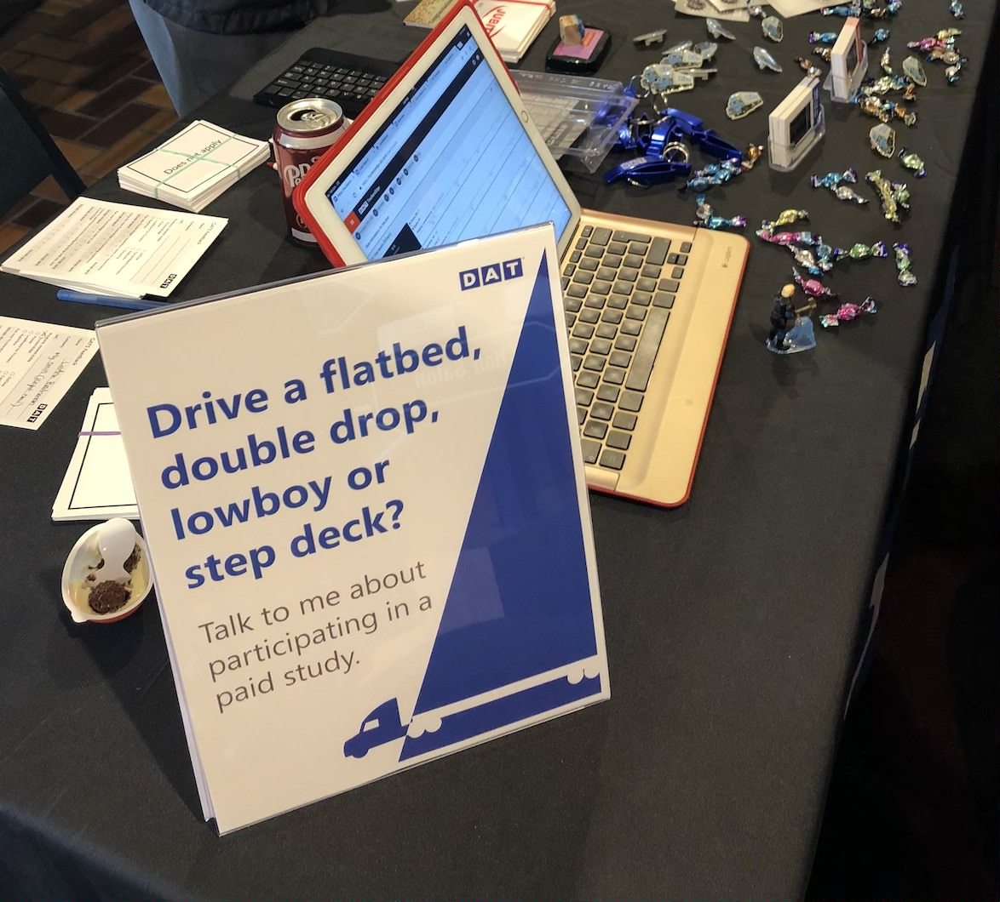
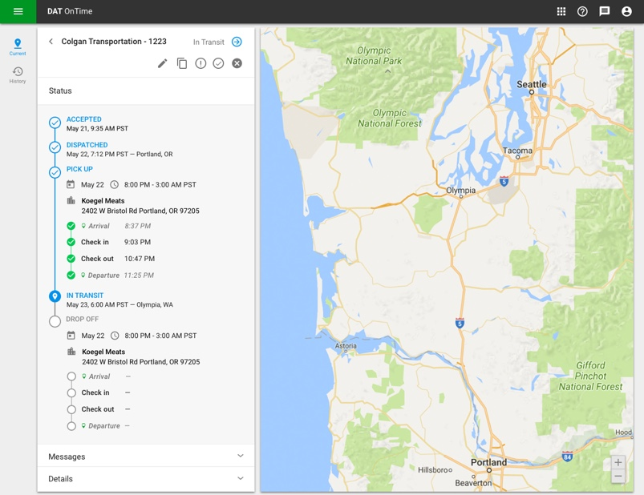

DAT Solutions is considered the trucking industry's premier load board, freight-rate aggregator and industry data provider. I was one of three visual designers assigned the task of giving DAT's entire product suite a visual and UX overhaul using Google's Material Design as a starting point. It felt like a herculean task as some products hadn't been updated in over a decade, but the first product I took on was their newest, OnTime.
OnTime is a product that allows freight brokers and shippers to track drivers carrying their freight. Brokers and shippers send tracking requests to truck drivers and keep tabs on the website for real time location updates. Meanwhile, drivers are tracked for a shipment's duration via GPS. OnTime sets itself apart from competitors with features like in-app messaging, real time location updates, and giving truckers control of their privacy when they are off duty.
Development had been underway for almost a year when I joined. There were only a few months until launch, but a lot of UI work needed to be done to replace placeholders by developers. Alongside fellow designers Mike Stinson and Arlene Anvitha, we finished a Sketch library of Google Material Design components so it could be used across DAT's product suite. I implemented those best practices for OnTime. With a design library in place, I was able to quickly create high fidelity mockups for developer handoff.
To keep overall vision in line, I enacted twice weekly design reviews with product. This helped temper "drive-thru product development", where decisions would be made during impromptu desk-side conversations. These twice weekly meetings were put in place to ensure we were all on the same page, talking to each other, and drawing boundaries in regards to sticking to goals by having everything in writing.
Time was tight, so frequent usability testing wasn't an option. However, our superhuman of a researcher was slated to attend two large industry conventions a couple weeks before launch, so we jumped on that as an opportunity for usability testing. Better late than never! I cranked out two clickable prototypes in a week that fully replicated an end to end web app and mobile app experiences. Our researcher returned with findings that both validated our assumptions and surprised us completely, but this gave me lots to iterate on.
After launching with a very minimum MVP, I worked closely with product to help refine and shape OnTime's future. With consistent design reviews, cross-team collaboration, and talking to truckers and brokers, we moved forward with key features we needed to develop. I also dipped my toes into some concepts for future "maybe someday" features, such as document capture (an essential tool in an industry filled with paperwork!), image uploading, and speech recognition.
I wanted to ensure that experiences between mobile and web were familiar. Likewise, I also wanted Android and iOS experiences to feel similar, but still be respectful of differences between platforms. This meant maintaining three different design libraries, constant references to Google Material Design documentation, Apple's Human Interface Guidelines, and maintaining strong communication with developers.
After launch, we had more opportunities for testing. This included three more major industry events, a local driver appreciation day at a truck stop in Portland, and remote usability testing. This outreach included exploratory research, ethnographic research, and usability testing to see where we could improve post-launch.
UX portfolios are typically places of seamless storytelling, with slick photos of sticky notes on walls from brainstorming sessions and clear problems with clear solutions. This was not such a product. If I had a magic wand, I would've pushed back on limitations, whether they were due to deadlines or if we were only building something because it neatly fit into one sprint cycle. What's another sprint cycle or two if it means a better outcome?
OnTime's largest competitor was a simple SMS app that required no sign up, no login, and no installation. Although the competition was 'hated' by truckers because it tracked them at all times, but they appreciated its simplicity. Feedback for our app was favorable; especially in regards to privacy, but adoption was poor. There were too many barriers to even getting started.
Here's what a new user onboarding experience is like for a truck driver: driver receives a text with a deep link to download OnTime, installs, opens app, signs up for a DAT account, activates account via email, returns to app, types in phone number for verification, receives verification code via text, types in verification code, and only the are they able to access the app and accept a tracking request! As a junior member team member, I didn't feel comfortable enough pushing back against headstrong stakeholders who didn't want to budge, though I knew I should have. There were still plenty of bright spots during my tenure, but not speaking up at the right time to advocate for users has helped form how I approach all projects since.
{kind=link}
{kind=link}
{kind=link}
{kind=link}
{kind=link}
{kind=link}
{kind=link}